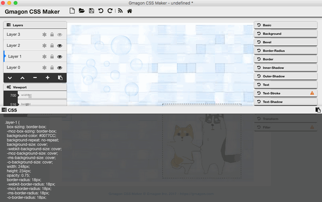

In this tutorial, we will concentrate on adding multiple layers or backgrounds with CSS code. With CSS, it is possible to work with layers: pieces of HTML that are placed on top of the regular page with pixel precision. With CSS3, you can apply multiple backgrounds to elements. These are layered atop one another with the first background you provide on top and the last background listed in the back. Only the last background can include a background color.
Browser Compatibility
Browser support for multiple backgrounds is relatively widespread with all of the main browsers offering support, without the need for vendor prefixes.
Firefox has supported multiple backgrounds since version 3.6 (Gecko 1.9.2), Safari since version 1.3, Chrome since version 10, Opera since version 10.50 (Presto 2.5) and Internet Explorer since version 9.0.
Practical Use of Layers
It’s obvious that layers offer certain possibilities for precise positioning of static elements on your pages.
In reality layers are often used in more dynamic ways:
Multiple Backgrounds
You can do this with both the shorthand background property and the individual properties thereof except for background-color. That is, the following background properties can be specified as a list, one per background: background, background-attachment, background-clip, background-image, background-origin, background-position, background-repeat, background-size.
Specifying multiple backgrounds is easy:
.myclass {
background: background1, background 2, ..., backgroundN;
}Example
In this example, three backgrounds are stacked: the full background of bricks, the image of dogs and the image of bubbles.
You can also get CSS code of every layers through:
